Filmes
- 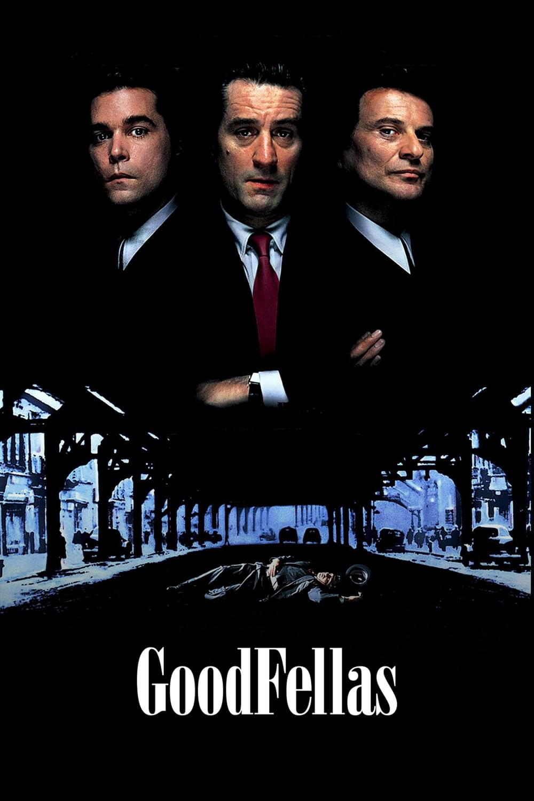
- 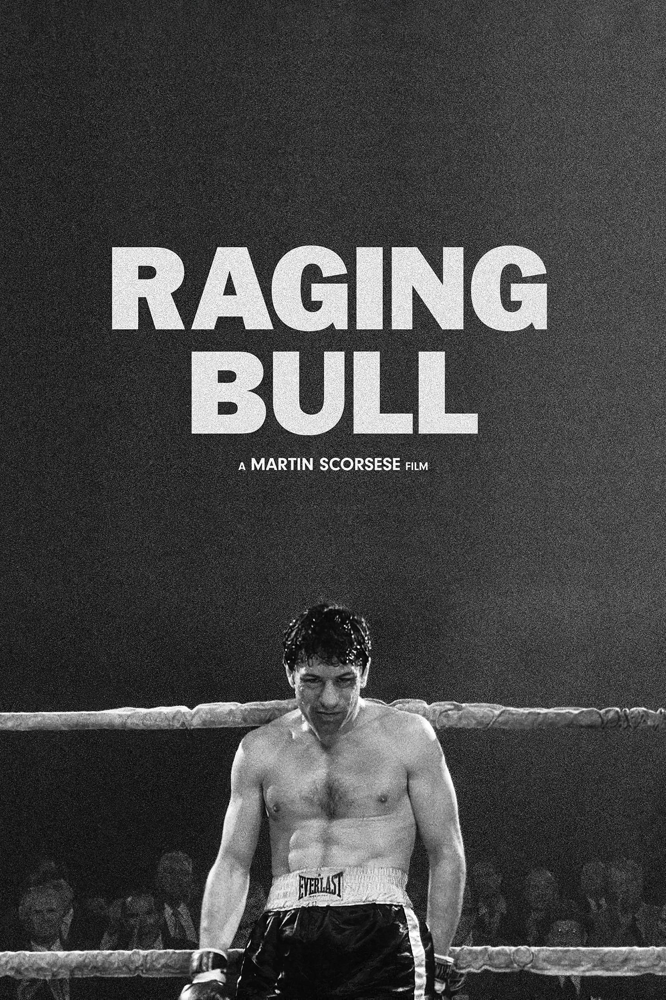
-
.png)
- 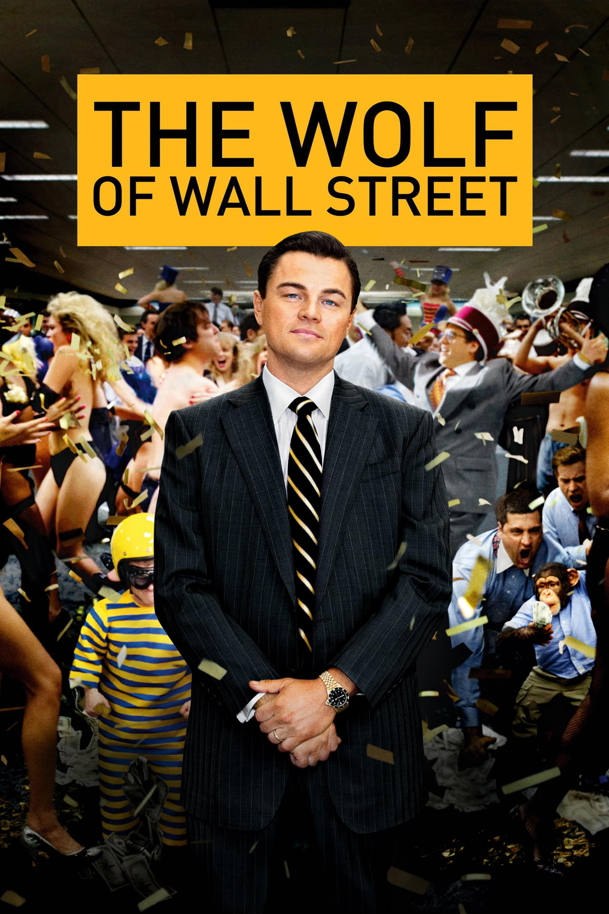
- 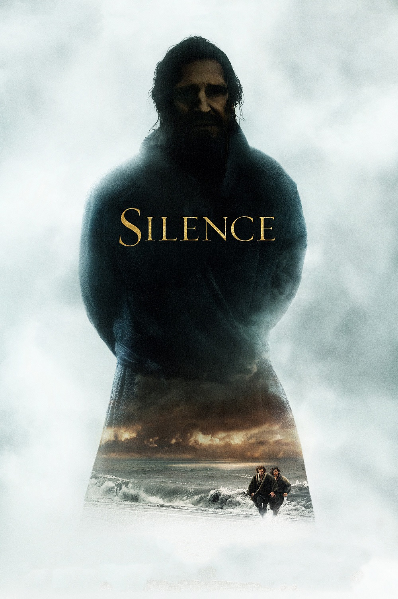
- 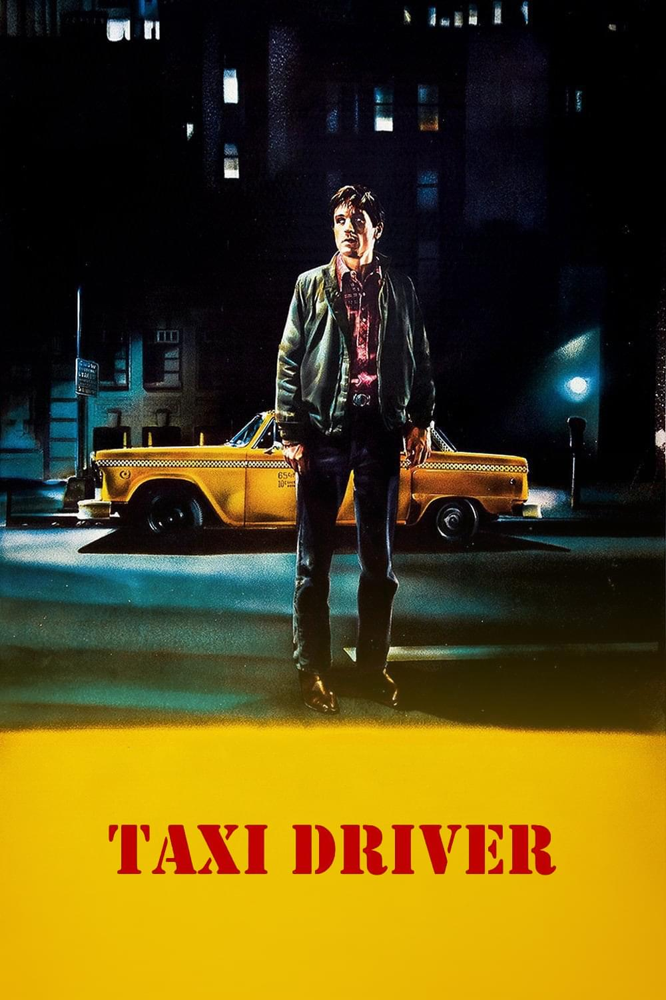
- 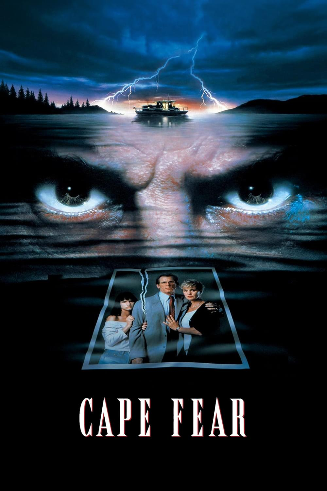
- 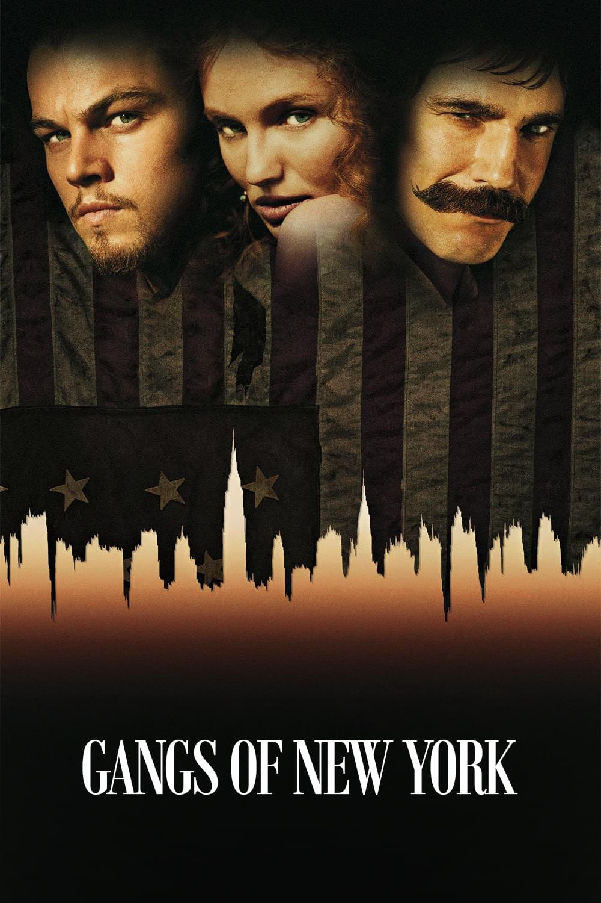
-
.png)
- 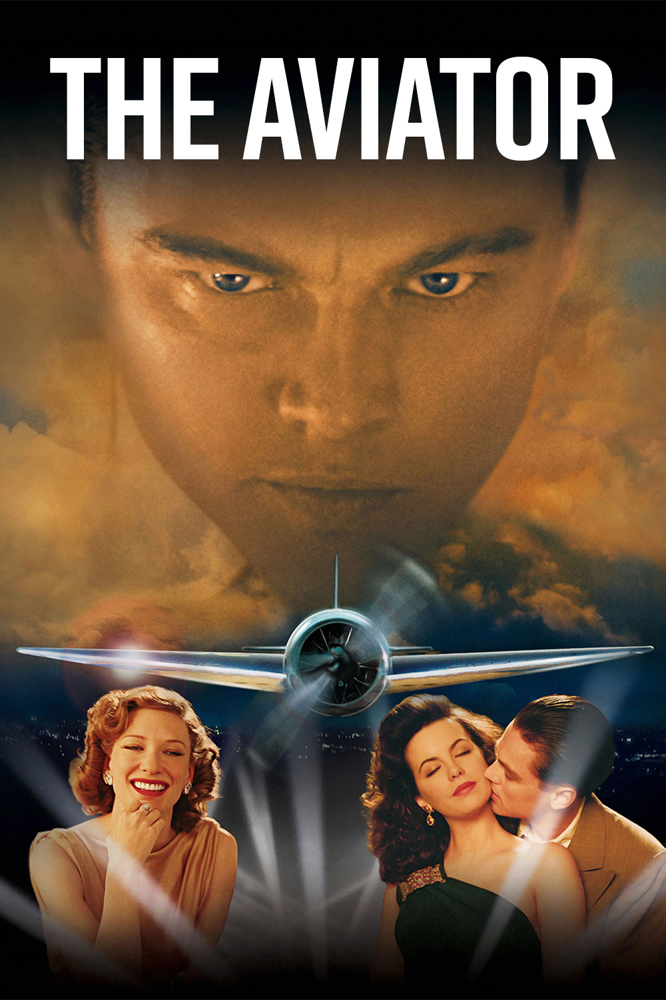
- 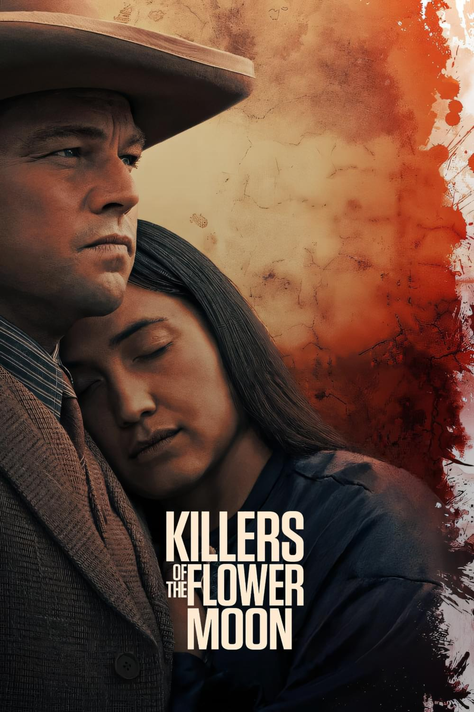
- 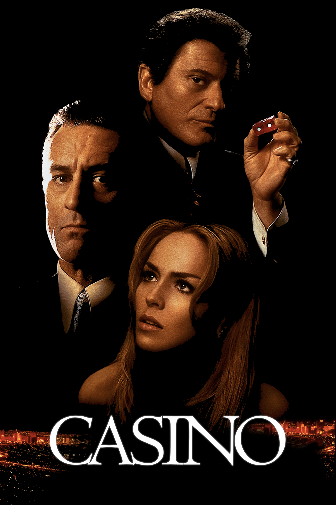
Filmes Premiados
-
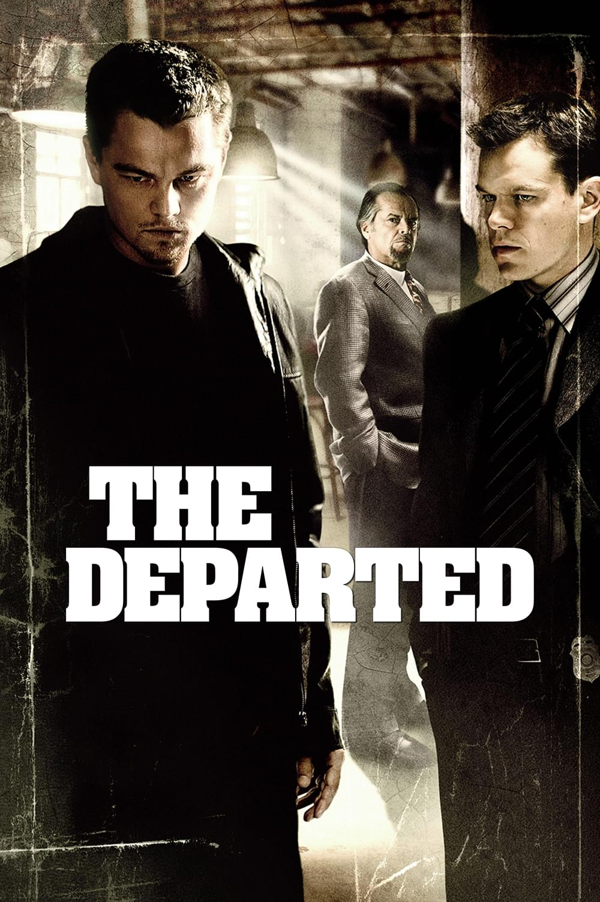
2007
- Oscar - Melhor Filme
- Oscar - Melhor Diretor
- Oscar - Melhor Roteiro Adaptado
- Oscar - Melhor Edição
-
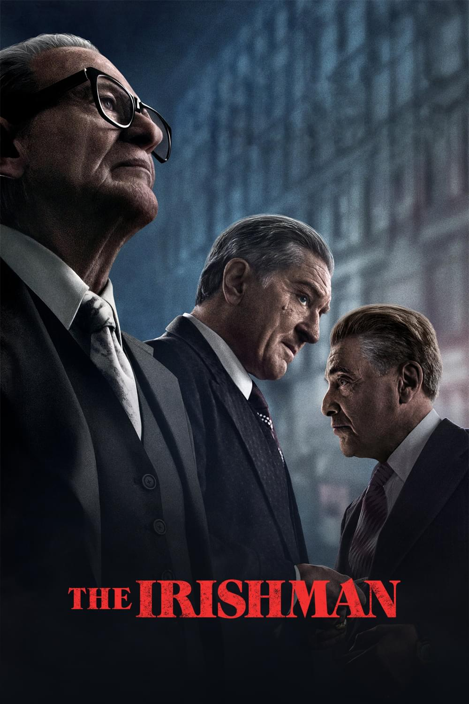
2019
- New York Film Critics Circle Award - Melhor Filme
- New York Film Critics Circle Award - Melhor Ator Coadjuvante
- Critics' Choice Award - Melhor Elenco
-
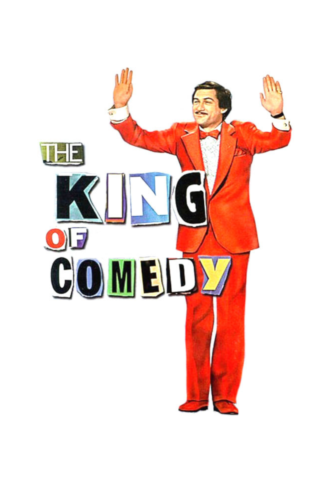
1982
- National Society of Film Critics Award - Melhor Atriz Coadjuvante
- Prêmio BAFTA de Cinema - Melhor Roteiro Original
- London Film Critics Circle de Melhor Filme do Ano
Curiosidades
-
Scorsese quase foi padre
Antes de ser 100% apaixonado por filmes, Scorsese havia treinado para se tornar padre e frequentou uma escola de teologia após se formar no ensino médio. Contudo, ele falhou e desistiu depois de apenas um ano. “Quando era mais jovem, estava pensando em fazer um filme sobre ser um padre. Eu mesmo queria seguir os passos do Padre Príncipe, por assim dizer, e ser padre. Fui para um seminário preparatório, mas falhei no primeiro ano,” revelou o cineasta em entrevista ao Padre Antonio Spadaro.
-
O primeiro filme de grande orçamento foi uma bomba
Scorsese já havia feito filmes de sucesso na indústria, como Alice Não Mora Mais Aqui(1974) e o aclamado Taxi Driver: Motorista de Táxi (1976) — mas esses longas não custaram mais de US$ 2 milhões. Com a fama adquirida, o cineasta conseguiu dirigir o primeiro filme de grande orçamento, o musical New York, New York(1977). Contudo, mesmo custando US$ 14 milhões, a produção não foi bem nas bilheterias e nem agradou à crítica.
-
Assistia filmes porque não conseguia praticar esportes
Scorsese sofria de asma quando criança — e isso o impedia de brincar com as crianças da vizinhança. Com isso, ao invés de jogar bola e participar de brincadeiras com os outros, o diretor era mais quieto e escolhia ir ao cinema. Assim, apaixonou-se pela arte de contar histórias nas telonas.